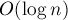

MAXimal
добавлено: 10 Jun 2008 17:59
редактировано: 28 Aug 2011 23:42
Содержание [скрыть]
Числа Фибоначчи
Определение
Последовательность Фибоначчи определяется следующим образом:

Несколько первых её членов:
История
Эти числа ввёл в 1202 г. Леонардо Фибоначчи (Leonardo Fibonacci) (также известный как Леонардо Пизанский (Leonardo Pisano)). Однако именно благодаря математику 19 века Люка (Lucas) название "числа Фибоначчи" стало общеупотребительным.
Впрочем, индийские математики упоминали числа этой последовательности ещё раньше: Гопала (Gopala) до 1135 г., Хемачандра (Hemachandra) — в 1150 г.
Числа Фибоначчи в природе
Сам Фибоначчи упоминал эти числа в связи с такой задачей: "Человек посадил пару кроликов в загон, окруженный со всех сторон стеной. Сколько пар кроликов за год может произвести на свет эта пара, если известно, что каждый месяц, начиная со второго, каждая пара кроликов производит на свет одну пару?". Решением этой задачи и будут числа последовательности, называемой теперь в его честь. Впрочем, описанная Фибоначчи ситуация — больше игра разума, чем реальная природа.
Индийские математики Гопала и Хемачандра упоминали числа этой последовательности в связи с количеством ритмических рисунков, образующихся в результате чередования долгих и кратких слогов в стихах или сильных и слабых долей в музыке. Число таких рисунков, имеющих в целом  долей, равно
долей, равно  .
.
Числа Фибоначчи появляются и в работе Кеплера 1611 года, который размышлял о числах, встречающихся в природе (работа "О шестиугольных снежинках").
Интересен пример растения — тысячелистника, у которого число стеблей (а значит и цветков) всегда есть число Фибоначчи. Причина этого проста: будучи изначально с единственным стеблем, этот стебель затем делится на два, затем от главного стебля ответвляется ещё один, затем первые два стебля снова разветвляются, затем все стебли, кроме двух последних, разветвляются, и так далее. Таким образом, каждый стебель после своего появления "пропускает" одно разветвление, а затем начинает делиться на каждом уровне разветвлений, что и даёт в результате числа Фибоначчи.
Вообще говоря, у многих цветов (например, лилий) число лепестков является тем или иным числом Фибоначчи.
Также в ботанике известно явление ''филлотаксиса''. В качестве примера можно привести расположение семечек подсолнуха: если посмотреть сверху на их расположение, то можно увидеть одновременно две серии спиралей (как бы наложенных друг на друга): одни закручены по часовой стрелке, другие — против. Оказывается, что число этих спиралей примерно совпадает с двумя последовательными числами Фибоначчи: 34 и 55 или 89 и 144. Аналогичные факты верны и для некоторых других цветов, а также для сосновых шишек, брокколи, ананасов, и т.д.
Для многих растений (по некоторым данным, для 90% из них) верен и такой интересный факт. Рассмотрим какой-нибудь лист, и будем спускаться от него вниз до тех пор, пока не достигнем листа, расположенного на стебле точно так же (т.е. направленного точно в ту же сторону). Попутно будем считать все листья, попадавшиеся нам (т.е. расположенные по высоте между стартовым листом и конечным), но расположенными по-другому. Нумеруя их, мы будем постепенно совершать витки вокруг стебля (поскольку листья расположены на стебле по спирали). В зависимости от того, совершать витки по часовой стрелке или против, будет получаться разное число витков. Но оказывается, что число витков, совершённых нами по часовой стрелке, число витков, совершённых против часовой стрелки, и число встреченных листьев образуют 3 последовательных числа Фибоначчи.
Впрочем, следует отметить, что есть и растения, для которых приведённые выше подсчёты дадут числа из совсем других последовательностей, поэтому нельзя сказать, что явление филлотаксиса является законом, — это скорее занимательная тенденция.
Свойства
Числа Фибоначчи обладают множеством интересных математических свойств.
Вот лишь некоторые из них:
- Соотношение Кассини:
- Правило "сложения":
- Из предыдущего равенства при вытекает:
- Из предыдущего равенста по индукции можно получить, что
всегда кратно
. - Верно и обратное к предыдущему утверждение:
если кратно
, то  кратно .
кратно . - НОД-равенство:
- По отношению к алгоритму Евклида числа Фибоначчи обладают тем замечательным свойством, что они являются наихудшими входными данными для этого алгоритма (см. "Теорема Ламе" в Алгоритме Евклида).
Фибоначчиева система счисления
Теорема Цекендорфа утверждает, что любое натуральное число можно представить единственным образом в виде суммы чисел Фибоначчи:
где , ,  , (т.е. в записи нельзя использовать два соседних числа Фибоначчи).
, (т.е. в записи нельзя использовать два соседних числа Фибоначчи).
Отсюда следует, что любое число можно однозначно записать в фибоначчиевой системе счисления, например:
причём ни в каком числе не могут идти две единицы подряд.
Нетрудно получить и правило прибавления единицы к числу в фибоначчиевой системе счисления: если младшая цифра равна 0, то её заменяем на 1, а если равна 1 (т.е. в конце стоит 01), то 01 заменяем на 10. Затем "исправляем" запись, последовательно исправляя везде 011 на 100. В результате за линейное время будет получена запись нового числа.
Перевод числа в фибоначчиеву систему счисления осуществляется простым "жадным" алгоритмом: просто перебираем числа Фибоначчи от больших к меньшим и, если некоторое , то входит в запись числа , и мы отнимаем от и продолжаем поиск.
Формула для n-го числа Фибоначчи
Формула через радикалы
Существует замечательная формула, называемая по имени французского математика Бине (Binet), хотя она была известна до него Муавру (Moivre):
Эту формулу легко доказать по индукции, однако вывести её можно с помощью понятия образующих функций или с помощью решения функционального уравнения.
Сразу можно заметить, что второе слагаемое всегда по модулю меньше 1, и более того, очень быстро убывает (экспоненциально). Отсюда следует, что значение первого слагаемого даёт "почти" значение . Это можно записать в строгом виде:
где квадратные скобки обозначают округление до ближайшего целого.
Впрочем, для практического применения в вычислениях эти формулы мало подходят, потому что требуют очень высокой точности работы с дробными числами.
Матричная формула для чисел Фибоначчи
Нетрудно доказать матричное следующее равенство:
![\pmatrix{
F_{n-2} & F_{n-1} \cr
} \cdot \pmatri[...]](../tex2png/cache/dae8aa23f9a9ab8ca68d653890d7200b.png)
Но тогда, обозначая
получаем:
Таким образом, для нахождения -го числа Фибоначчи надо возвести матрицу  в степень .
в степень .
Вспоминая, что возведение матрицы в -ую степень можно осуществить за  (см. Бинарное возведение в степень), получается, что -ое число Фибоначчи можно легко вычислить за c использованием только целочисленной арифметики.
Периодичность последовательности Фибоначчи по модулю
Рассмотрим последовательность Фибоначчи  по некоторому модулю
по некоторому модулю  . Докажем, что она является периодичной, и причём период начинается с (т.е. предпериод содержит только ).
. Докажем, что она является периодичной, и причём период начинается с (т.е. предпериод содержит только ).
Докажем это от противного. Рассмотрим пар чисел Фибоначчи, взятых по модулю :
Поскольку по модулю может быть только различных пар, то среди этой последовательности найдётся как минимум две одинаковые пары. Это уже означает, что последовательность периодична.
Выберем теперь среди всех таких одинаковых пар две одинаковые пары с наименьшими номерами. Пусть это пары с некоторыми номерами и . Докажем, что . Действительно, в противном случае для них найдутся предыдущие пары и , которые, по свойству чисел Фибоначчи, также будут равны друг другу. Однако это противоречит тому, что мы выбрали совпадающие пары с наименьшими номерами, что и требовалось доказать.
Литература